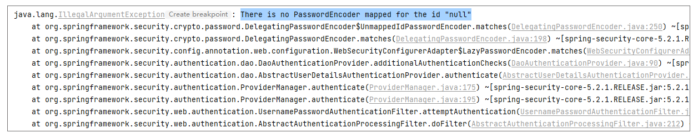
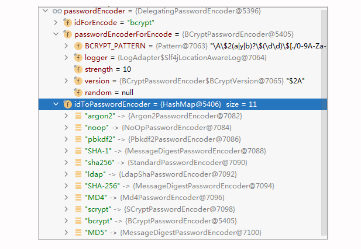
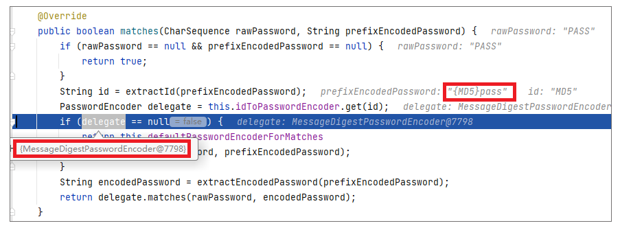
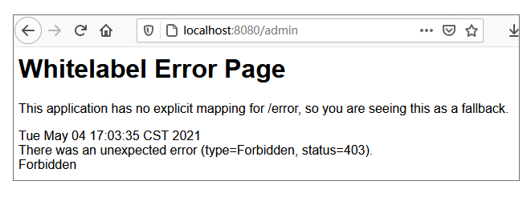
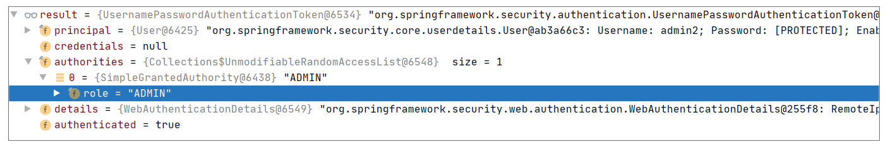
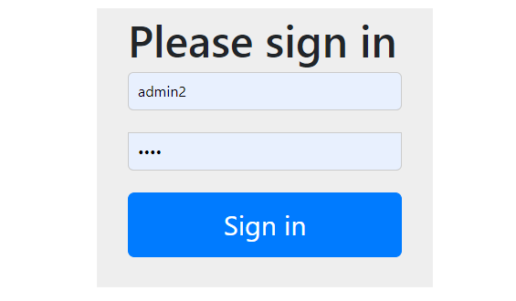

- 00 导读 5分钟轻松了解Spring基础知识.md.html
- 00 开篇词 贴心“保姆”Spring罢工了怎么办？.md.html
- 01 Spring Bean 定义常见错误.md.html
- 02 Spring Bean 依赖注入常见错误（上）.md.html
- 03 Spring Bean 依赖注入常见错误（下）.md.html
- 04 Spring Bean 生命周期常见错误.md.html
- 05 Spring AOP 常见错误（上）.md.html
- 06 Spring AOP 常见错误（下）.md.html
- 07 Spring事件常见错误.md.html
- 08 答疑现场：Spring Core 篇思考题合集.md.html
- 09 Spring Web URL 解析常见错误.md.html
- 10 Spring Web Header 解析常见错误.md.html
- 11 Spring Web Body 转化常见错误.md.html
- 12 Spring Web 参数验证常见错误.md.html
- 13 Spring Web 过滤器使用常见错误（上）.md.html
- 14 Spring Web 过滤器使用常见错误（下）.md.html
- 15 Spring Security 常见错误.md.html
- 16 Spring Exception 常见错误.md.html
- 17 答疑现场：Spring Web 篇思考题合集.md.html
- 18 Spring Data 常见错误.md.html
- 19 Spring 事务常见错误（上）.md.html
- 20 Spring 事务常见错误（下）.md.html
- 21 Spring Rest Template 常见错误.md.html
- 22 Spring Test 常见错误.md.html
- 23 答疑现场：Spring 补充篇思考题合集.md.html
- 导读 5分钟轻松了解一个HTTP请求的处理过程.md.html
- 知识回顾 系统梳理Spring编程错误根源.md.html
- 结束语 问题总比解决办法多.md.html
- 捐赠
15 Spring Security 常见错误
你好，我是傅健。前面几节课我们学习了 Spring Web 开发中请求的解析以及过滤器的使用。这一节课，我们接着讲 Spring Security 的应用。
实际上，在 Spring 中，对于 Security 的处理基本都是借助于过滤器来协助完成的。粗略使用起来不会太难，但是 Security 本身是个非常庞大的话题，所以这里面遇到的错误自然不会少。好在使用 Spring Security 的应用和开发者实在是太多了，以致于时至今日，也没有太多明显的坑了。
在今天的课程里，我会带着你快速学习下两个典型的错误，相信掌握它们，关于 Spring Security 的雷区你就不需要太担心了。不过需要说明的是，授权的种类千千万，这里为了让你避免纠缠于业务逻辑实现，我讲解的案例都将直接基于 Spring Boot 使用默认的 Spring Security 实现来讲解。接下来我们正式进入课程的学习。
案例 1：遗忘 PasswordEncoder
当我们第一次尝试使用 Spring Security 时，我们经常会忘记定义一个 PasswordEncoder。因为这在 Spring Security 旧版本中是允许的。而一旦使用了新版本，则必须要提供一个 PasswordEncoder。这里我们可以先写一个反例来感受下：
首先我们在 Spring Boot 项目中直接开启 Spring Security：
<dependency>
<groupId>org.springframework.boot</groupId>
<artifactId>spring-boot-starter-security</artifactId>
</dependency>
添加完这段依赖后，Spring Security 就已经生效了。然后我们配置下安全策略，如下：
@Configuration
public class MyWebSecurityConfig extends WebSecurityConfigurerAdapter {
//
// @Bean
// public PasswordEncoder passwordEncoder() {
// return new PasswordEncoder() {
// @Override
// public String encode(CharSequence charSequence) {
// return charSequence.toString();
// }
//
// @Override
// public boolean matches(CharSequence charSequence, String // s) {
// return Objects.equals(charSequence.toString(), s);
// }
// };
// }
@Override
protected void configure(AuthenticationManagerBuilder auth) throws Exception {
auth.inMemoryAuthentication()
.withUser("admin").password("pass").roles("ADMIN");
}
// 配置 URL 对应的访问权限
@Override
protected void configure(HttpSecurity http) throws Exception {
http.authorizeRequests()
.antMatchers("/admin/**").hasRole("ADMIN")
.anyRequest().authenticated()
.and()
.formLogin().loginProcessingUrl("/login").permitAll()
.and().csrf().disable();
}
}
这里，我们故意“注释”掉 PasswordEncoder 类型 Bean 的定义。然后我们定义一个 SpringApplication 启动程序来启动服务，我们会发现启动成功了：
INFO 8628 — [ restartedMain] c.s.p.web.security.example1.Application : Started Application in 3.637 seconds (JVM running for 4.499)
但是当我们发送一个请求时（例如 http://localhost:8080/admin ），就会报错java.lang.IllegalArgumentException: There is no PasswordEncoder mapped for the id “null”，具体错误堆栈信息如下：

所以，如果我们不按照最新版本的 Spring Security 教程操作，就很容易忘记 PasswordEncoder 这件事。那么为什么缺少它就会报错，它的作用又在哪？接下来我们具体解析下。
案例解析
我们可以反思下，为什么需要一个 PasswordEncoder。实际上，这是安全保护的范畴。
假设我们没有这样的一个东西，那么当用户输入登录密码之后，我们如何判断密码和内存或数据库中存储的密码是否一致呢？假设就是简单比较下是否相等，那么必然要求存储起来的密码是非加密的，这样其实就存在密码泄露的风险了。
反过来思考，为了安全，我们一般都会将密码加密存储起来。那么当用户输入密码时，我们就不是简单的字符串比较了。我们需要根据存储密码的加密算法来比较用户输入的密码和存储的密码是否一致。所以我们需要一个 PasswordEncoder 来满足这个需求。这就是为什么我们需要自定义一个 PasswordEncoder 的原因。
再看下它的两个关键方法 encode() 和 matches()，相信你就能理解它们的作用了。
思考下，假设我们默认提供一个出来并集成到 Spring Security 里面去，那么很可能隐藏错误，所以还是强制要求起来比较合适。
我们再从源码上看下 “no PasswordEncoder” 异常是如何被抛出的？当我们不指定PasswordEncoder去启动我们的案例程序时，我们实际指定了一个默认的PasswordEncoder，这点我们可以从构造器DaoAuthenticationProvider看出来：
public DaoAuthenticationProvider() {
setPasswordEncoder(PasswordEncoderFactories.createDelegatingPasswordEncoder());
}
我们可以看下PasswordEncoderFactories.createDelegatingPasswordEncoder()的实现：
public static PasswordEncoder createDelegatingPasswordEncoder() {
String encodingId = "bcrypt";
Map<String, PasswordEncoder> encoders = new HashMap<>();
encoders.put(encodingId, new BCryptPasswordEncoder());
encoders.put("ldap", new org.springframework.security.crypto.password.LdapShaPasswordEncoder());
encoders.put("MD4", new org.springframework.security.crypto.password.Md4PasswordEncoder());
encoders.put("MD5", new org.springframework.security.crypto.password.MessageDigestPasswordEncoder("MD5"));
encoders.put("noop", org.springframework.security.crypto.password.NoOpPasswordEncoder.getInstance());
encoders.put("pbkdf2", new Pbkdf2PasswordEncoder());
encoders.put("scrypt", new SCryptPasswordEncoder());
encoders.put("SHA-1", new org.springframework.security.crypto.password.MessageDigestPasswordEncoder("SHA-1"));
encoders.put("SHA-256", new org.springframework.security.crypto.password.MessageDigestPasswordEncoder("SHA-256"));
encoders.put("sha256", new org.springframework.security.crypto.password.StandardPasswordEncoder());
encoders.put("argon2", new Argon2PasswordEncoder());
return new DelegatingPasswordEncoder(encodingId, encoders);
}
我们可以换一个视角来看下这个DelegatingPasswordEncoder长什么样：

通过上图可以看出，其实它是多个内置的 PasswordEncoder 集成在了一起。
当我们校验用户时，我们会通过下面的代码来匹配，参考DelegatingPasswordEncoder#matches：
private PasswordEncoder defaultPasswordEncoderForMatches = new UnmappedIdPasswordEncoder();
@Override
public boolean matches(CharSequence rawPassword, String prefixEncodedPassword) {
if (rawPassword == null && prefixEncodedPassword == null) {
return true;
}
String id = extractId(prefixEncodedPassword);
PasswordEncoder delegate = this.idToPasswordEncoder.get(id);
if (delegate == null) {
return this.defaultPasswordEncoderForMatches
.matches(rawPassword, prefixEncodedPassword);
}
String encodedPassword = extractEncodedPassword(prefixEncodedPassword);
return delegate.matches(rawPassword, encodedPassword);
}
private String extractId(String prefixEncodedPassword) {
if (prefixEncodedPassword == null) {
return null;
}
//{
int start = prefixEncodedPassword.indexOf(PREFIX);
if (start != 0) {
return null;
}
//}
int end = prefixEncodedPassword.indexOf(SUFFIX, start);
if (end < 0) {
return null;
}
return prefixEncodedPassword.substring(start + 1, end);
}
可以看出，假设我们的 prefixEncodedPassword 中含有 id，则根据 id 到 DelegatingPasswordEncoder 的 idToPasswordEncoder 找出合适的 Encoder；假设没有 id，则使用默认的UnmappedIdPasswordEncoder。我们来看下它的实现：
private class UnmappedIdPasswordEncoder implements PasswordEncoder {
@Override
public String encode(CharSequence rawPassword) {
throw new UnsupportedOperationException("encode is not supported");
}
@Override
public boolean matches(CharSequence rawPassword,
String prefixEncodedPassword) {
String id = extractId(prefixEncodedPassword);
throw new IllegalArgumentException("There is no PasswordEncoder mapped for the id \"" + id + "\"");
}
}
从上述代码可以看出，no PasswordEncoder for the id “null” 异常就是这样被 UnmappedIdPasswordEncoder 抛出的。那么这个可能含有 id 的 prefixEncodedPassword 是什么？其实它就是存储的密码，在我们的案例中由下面代码行中的 password() 指定：
auth.inMemoryAuthentication() .withUser("admin").password("pass").roles("ADMIN");
这里我们不妨测试下，修改下上述代码行，给密码指定一个加密方式，看看之前的异常还存在与否：
auth.inMemoryAuthentication() .withUser("admin").password("{MD5}pass").roles("ADMIN");
此时，以调试方式运行程序，你会发现，这个时候已经有了 id，且取出了合适的 PasswordEncoder。

说到这里，相信你已经知道问题的来龙去脉了。问题的根源还是在于我们需要一个PasswordEncoder，而当前案例没有给我们指定出来。
问题修正
那么通过分析，你肯定知道如何解决这个问题了，无非就是自定义一个 PasswordEncoder。具体修正代码你可以参考之前给出的代码，这里不再重复贴出。
另外，通过案例解析，相信你也想到了另外一种解决问题的方式，就是在存储的密码上做文章。具体到我们案例，可以采用下面的修正方式：
auth.inMemoryAuthentication() .withUser("admin").password("{noop}pass").roles("ADMIN");
然后定位到这个方式，实际上就等于指定 PasswordEncoder 为NoOpPasswordEncoder了，它的实现如下：
public final class NoOpPasswordEncoder implements PasswordEncoder {
public String encode(CharSequence rawPassword) {
return rawPassword.toString();
}
public boolean matches(CharSequence rawPassword, String encodedPassword) {
return rawPassword.toString().equals(encodedPassword);
}
//省略部分非关键代码
}
不过，这种修正方式比较麻烦，毕竟每个密码都加个前缀也不合适。所以综合比较来看，还是第一种修正方式更普适。当然如果你的需求是不同的用户有不同的加密，或许这种方式也是不错的。
案例 2：ROLE_ 前缀与角色
我们再来看一个 Spring Security 中关于权限角色的案例，ROLE_ 前缀加还是不加？不过这里我们需要提供稍微复杂一些的功能，即模拟授权时的角色相关控制。所以我们需要完善下案例，这里我先提供一个接口，这个接口需要管理的操作权限：
@RestController
public class HelloWorldController {
@RequestMapping(path = "admin", method = RequestMethod.GET)
public String admin(){
return "admin operation";
};
然后我们使用 Spring Security 默认的内置授权来创建一个授权配置类：
@Configuration
public class MyWebSecurityConfig extends WebSecurityConfigurerAdapter {
@Bean
public PasswordEncoder passwordEncoder() {
//同案例1，这里省略掉
}
@Override
protected void configure(AuthenticationManagerBuilder auth) throws Exception {
auth.inMemoryAuthentication()
.withUser("fujian").password("pass").roles("USER")
.and()
.withUser("admin1").password("pass").roles("ADMIN")
.and()
.withUser(new UserDetails() {
@Override
public Collection<? extends GrantedAuthority> getAuthorities() {
return Arrays.asList(new SimpleGrantedAuthority("ADMIN"));
}
//省略其他非关键“实现”方法
public String getUsername() {
return "admin2";
}
});
}
// 配置 URL 对应的访问权限
@Override
protected void configure(HttpSecurity http) throws Exception {
http.authorizeRequests()
.antMatchers("/admin/**").hasRole("ADMIN")
.anyRequest().authenticated()
.and()
.formLogin().loginProcessingUrl("/login").permitAll()
.and().csrf().disable();
}
}
通过上述代码，我们添加了 3 个用户：
- 用户 fujian：角色为 USER
- 用户 admin1：角色为 ADMIN
- 用户 admin2：角色为 ADMIN
然后我们从浏览器访问我们的接口 http://localhost:8080/admin，使用上述 3 个用户登录，你会发现用户 admin1 可以登录，而 admin2 设置了同样的角色却不可以登陆，并且提示下面的错误：

如何理解这个现象？
案例解析
要了解这个案例出现的原因，其实是需要我们对 Spring 安全中的 Role 前缀有一个深入的认识。不过，在这之前，你可能想不到案例出错的罪魁祸首就是它，所以我们得先找到一些线索。
对比 admin1 和 admin2 用户的添加，你会发现，这仅仅是两种添加内置用户的风格而已。但是为什么前者可以正常工作，后者却不可以？本质就在于 Role 的设置风格，可参考下面的这两段关键代码：
//admin1 的添加
.withUser("admin").password("pass").roles("ADMIN")
//admin2 的添加
.withUser(new UserDetails() {
@Override
public Collection<? extends GrantedAuthority> getAuthorities() {
return Arrays.asList(new SimpleGrantedAuthority("ADMIN"));
}
@Override
public String getUsername() {
return "admin2";
}
//省略其他非关键代码
});
查看上面这两种添加方式，你会发现它们真的仅仅是两种风格而已，所以最终构建出用户的代码肯定是相同的。我们先来查看下 admin1 的添加最后对 Role 的处理（参考 User.UserBuilder#roles）：
public UserBuilder roles(String... roles) {
List<GrantedAuthority> authorities = new ArrayList<>(
roles.length);
for (String role : roles) {
Assert.isTrue(!role.startsWith("ROLE_"), () -> role
+ " cannot start with ROLE_ (it is automatically added)");
//添加“ROLE_”前缀
authorities.add(new SimpleGrantedAuthority("ROLE_" + role));
}
return authorities(authorities);
}
public UserBuilder authorities(Collection<? extends GrantedAuthority> authorities) {
this.authorities = new ArrayList<>(authorities);
return this;
}
可以看出，当 admin1 添加 ADMIN 角色时，实际添加进去的是 ROLE_ADMIN。但是我们再来看下 admin2 的角色设置，最终设置的方法其实就是 User#withUserDetails：
public static UserBuilder withUserDetails(UserDetails userDetails) {
return withUsername(userDetails.getUsername())
//省略非关键代码
.authorities(userDetails.getAuthorities())
.credentialsExpired(!userDetails.isCredentialsNonExpired())
.disabled(!userDetails.isEnabled());
}
public UserBuilder authorities(Collection<? extends GrantedAuthority> authorities) {
this.authorities = new ArrayList<>(authorities);
return this;
}
所以，admin2 的添加，最终设置进的 Role 就是 ADMIN。
此时我们可以得出一个结论：通过上述两种方式设置的相同 Role（即 ADMIN），最后存储的 Role 却不相同，分别为 ROLE_ADMIN 和 ADMIN。那么为什么只有 ROLE_ADMIN 这种用户才能通过授权呢？这里我们不妨通过调试视图看下授权的调用栈，截图如下：

对于案例的代码，最终是通过 “UsernamePasswordAuthenticationFilter” 来完成授权的。而且从调用栈信息可以大致看出，授权的关键其实就是查找用户，然后校验权限。查找用户的方法可参考 InMemoryUserDetailsManager#loadUserByUsername，即根据用户名查找已添加的用户：
public UserDetails loadUserByUsername(String username)
throws UsernameNotFoundException {
UserDetails user = users.get(username.toLowerCase());
if (user == null) {
throw new UsernameNotFoundException(username);
}
return new User(user.getUsername(), user.getPassword(), user.isEnabled(),
user.isAccountNonExpired(), user.isCredentialsNonExpired(),
user.isAccountNonLocked(), user.getAuthorities());
}
完成账号是否过期、是否锁定等检查后，我们会把这个用户转化为下面的 Token（即 UsernamePasswordAuthenticationToken）供后续使用，关键信息如下：

最终在判断角色时，我们会通过 UsernamePasswordAuthenticationToken 的父类方法 AbstractAuthenticationToken#getAuthorities 来取到上述截图中的 ADMIN。而判断是否具备某个角色时，使用的关键方法是 SecurityExpressionRoot#hasAnyAuthorityName：
private boolean hasAnyAuthorityName(String prefix, String... roles) {
//通过 AbstractAuthenticationToken#getAuthorities 获取“role”
Set<String> roleSet = getAuthoritySet();
for (String role : roles) {
String defaultedRole = getRoleWithDefaultPrefix(prefix, role);
if (roleSet.contains(defaultedRole)) {
return true;
}
}
return false;
}
//尝试添加“prefix”,即“ROLE_”
private static String getRoleWithDefaultPrefix(String defaultRolePrefix, String role) {
if (role == null) {
return role;
}
if (defaultRolePrefix == null || defaultRolePrefix.length() == 0) {
return role;
}
if (role.startsWith(defaultRolePrefix)) {
return role;
}
return defaultRolePrefix + role;
}
在上述代码中，prefix 是 ROLE_（默认值，即 SecurityExpressionRoot#defaultRolePrefix），Roles 是待匹配的角色 ROLE_ADMIN，产生的 defaultedRole 是 ROLE_ADMIN，而我们的 role-set 是从 UsernamePasswordAuthenticationToken 中获取到 ADMIN，所以最终判断的结果是 false。
最终这个结果反映给上层来决定是否通过授权，可参考 WebExpressionVoter#vote：
public int vote(Authentication authentication, FilterInvocation fi,
Collection<ConfigAttribute> attributes) {
//省略非关键代码
return ExpressionUtils.evaluateAsBoolean(weca.getAuthorizeExpression(), ctx) ? ACCESS_GRANTED
: ACCESS_DENIED;
}
很明显，当是否含有某个角色（表达式 Expression：hasRole(‘ROLE_ADMIN’)）的判断结果为 false 时，返回的结果是 ACCESS_DENIED。
问题修正
针对这个案例，有了源码的剖析，可以看出：ROLE_ 前缀在 Spring Security 前缀中非常重要。而要解决这个问题，也非常简单，我们直接在添加 admin2 时，给角色添加上 ROLE_ 前缀即可：
//admin2 的添加
.withUser(new UserDetails() {
@Override
public Collection<? extends GrantedAuthority> getAuthorities() {
return Arrays.asList(new SimpleGrantedAuthority("ROLE_ADMIN"));
}
@Override
public String getUsername() {
return "admin2";
}
//省略其他非关键代码
})
参考上述代码，我们给 Role 添加了前缀，重新运行程序后，结果符合预期。
反思这个案例，我们可以总结出：有时候，不同的 API 提供了不同的设置 Role 的方式，但是我们一定要注意是否需要添加 ROLE_ 这个前缀。而如何判断，这里我也没有更好的办法，只能通过经验或者查看源码来核实了。
重点回顾
最后我们梳理下课程中所提及的重点。
- PasswordEncoder
在新版本的 Spring Security 中，你一定不要忘记指定一个PasswordEncoder，因为出于安全考虑，我们肯定是要对密码加密的。至于如何指定，其实有多种方式。常见的方式是自定义一个PasswordEncoder类型的Bean。还有一种不常见的方式是通过存储密码时加上加密方法的前缀来指定，例如密码原来是password123，指定前缀后可能是 {MD5}password123。我们可以根据需求来采取不同的解决方案。
- Role
在使用角色相关的授权功能时，你一定要注意这个角色是不是加了前缀 ROLE_。
虽然 Spring 在很多角色的设置上，已经尽量尝试加了前缀，但是仍然有许多接口是可以随意设置角色的。所以有时候你没意识到这个问题去随意设置的话，在授权检验时就会出现角色控制不能生效的情况。从另外一个角度看，当你的角色设置失败时，你一定要关注下是不是忘记加前缀了。
以上即为这节课的重点，希望你能有所收获。
思考题
通过案例 1 的学习，我们知道在 Spring Boot 开启 Spring Security 时，访问需要授权的 API 会自动跳转到如下登录页面，你知道这个页面是如何产生的么？

期待你的思考，我们留言区见！
© 2019 - 2023 Liangliang Lee. Powered by gin and hexo-theme-book.